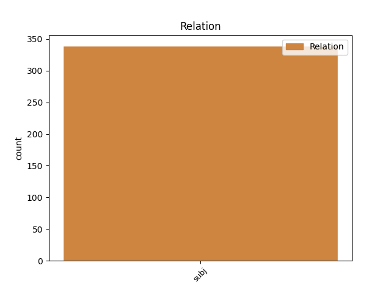
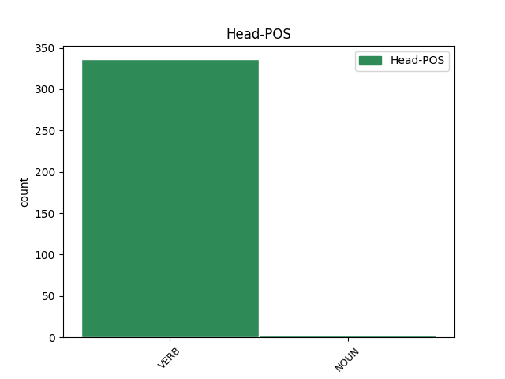
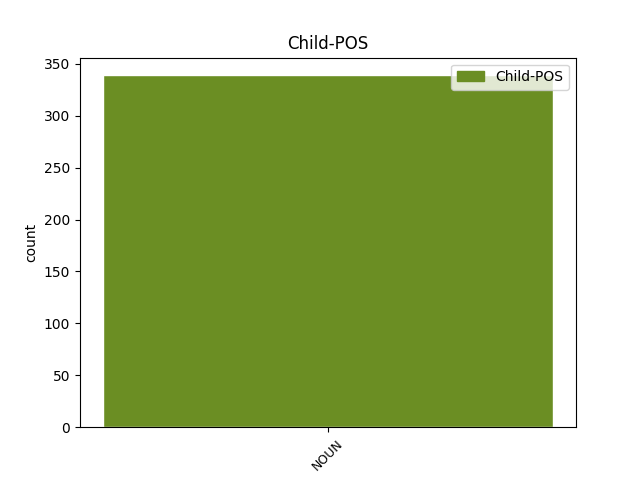

Distribution of features within this leaf



Agreement Rules sorted by frequency.
- When the dependent token is the subject(subj) of the head token, and the dependent token is NOUN.
1 ἡμεῖς _ _ _ _ 0 _ _ _
2 δὲ _ _ _ _ 0 _ _ _
3 παρόντες _ _ _ _ 0 _ _ _
4 ἐπὶ _ _ _ _ 0 _ _ _
5 τὸν _ _ _ _ 0 _ _ _
6 προηγούμενον _ _ _ _ 0 _ _ _
7 ἐνιαυτὸν _ _ _ _ 0 _ _ _
8 τῆς _ _ _ _ 0 _ _ _
9 Ἀθηναίων _ _ _ _ 0 _ _ _
10 στρατείας _ _ _ _ 0 _ _ _
11 ἐπὶ _ _ _ _ 0 _ _ _
12 Κύπρον _ _ _ _ 0 _ _ _
13 Κίμωνος Κίμων NOUN n-s---mg- Case=Gen|Gender=Masc|Number=Sing 14 subj _ _
14 ἡγουμένου ἡγέομαι VERB v-sppemg- Case=Gen|Gender=Masc|Number=Sing|Tense=Pres|VerbForm=Part|Voice=Mid 0 _ _ _
15 , _ _ _ _ 0 _ _ _
16 κατὰ _ _ _ _ 0 _ _ _
17 τὴν _ _ _ _ 0 _ _ _
18 ἐν _ _ _ _ 0 _ _ _
19 ἀρχῇ _ _ _ _ 0 _ _ _
20 πρόθεσιν _ _ _ _ 0 _ _ _
21 αὐτοῦ _ _ _ _ 0 _ _ _
22 περιγράφομεν _ _ _ _ 0 _ _ _
23 τήνδε _ _ _ _ 0 _ _ _
24 τὴν _ _ _ _ 0 _ _ _
25 βίβλον _ _ _ _ 0 _ _ _
26 . _ _ _ _ 0 _ _ _
Disagree Examples:
1 ὁδὸν _ _ _ _ 0 _ _ _
2 γὰρ _ _ _ _ 0 _ _ _
3 ἦμος _ _ _ _ 0 _ _ _
4 τὴν _ _ _ _ 0 _ _ _
5 τελευταίαν _ _ _ _ 0 _ _ _
6 ἄναξ _ _ _ _ 0 _ _ _
7 ὡρμᾶτ̓ _ _ _ _ 0 _ _ _
8 ἀπ̓ _ _ _ _ 0 _ _ _
9 οἴκων _ _ _ _ 0 _ _ _
10 Ἡρακλῆς _ _ _ _ 0 _ _ _
11 , _ _ _ _ 0 _ _ _
12 τότ̓ _ _ _ _ 0 _ _ _
13 ἐν _ _ _ _ 0 _ _ _
14 δόμοις _ _ _ _ 0 _ _ _
15 λείπει _ _ _ _ 0 _ _ _
16 παλαιὰν _ _ _ _ 0 _ _ _
17 δέλτον _ _ _ _ 0 _ _ _
18 ἐγγεγραμμένην ἐγγράφω VERB v-srpefa- Aspect=Perf|Case=Acc|Gender=Fem|Number=Sing|Tense=Past|VerbForm=Part|Voice=Mid 0 _ _ _
19 ξυνθήμαθ̓ σύνθημα NOUN n-p---na- Case=Acc|Gender=Neut|Number=Plur 18 subj _ SpaceAfter=No
20 , _ _ _ _ 0 _ _ _
21 ἁμοὶ _ _ _ _ 0 _ _ _
22 πρόσθεν _ _ _ _ 0 _ _ _
23 οὐκ _ _ _ _ 0 _ _ _
24 ἔτλη _ _ _ _ 0 _ _ _
25 ποτέ _ _ _ _ 0 _ _ _
26 , _ _ _ _ 0 _ _ _
27 πολλοὺς _ _ _ _ 0 _ _ _
28 ἀγῶνας _ _ _ _ 0 _ _ _
29 ἐξιών _ _ _ _ 0 _ _ _
30 , _ _ _ _ 0 _ _ _
31 οὔπω _ _ _ _ 0 _ _ _
32 φράσαι _ _ _ _ 0 _ _ _
33 , _ _ _ _ 0 _ _ _
34 ἀλλ̓ _ _ _ _ 0 _ _ _
35 ὥς _ _ _ _ 0 _ _ _
36 τι _ _ _ _ 0 _ _ _
37 δράσων _ _ _ _ 0 _ _ _
38 εἷρπε _ _ _ _ 0 _ _ _
39 κοὐ _ _ _ _ 0 _ _ _
40 θανούμενος _ _ _ _ 0 _ _ _
41 . _ _ _ _ 0 _ _ _
1 αὐτὰρ _ _ _ _ 0 _ _ _
2 ἐπεί _ _ _ _ 0 _ _ _
3 κ̓ _ _ _ _ 0 _ _ _
4 ἢ _ _ _ _ 0 _ _ _
5 δουρὶ _ _ _ _ 0 _ _ _
6 τυπεὶς _ _ _ _ 0 _ _ _
7 ἢ _ _ _ _ 0 _ _ _
8 βλήμενος _ _ _ _ 0 _ _ _
9 ἰῷ _ _ _ _ 0 _ _ _
10 εἰς _ _ _ _ 0 _ _ _
11 ἵππους _ _ _ _ 0 _ _ _
12 ἅλεται _ _ _ _ 0 _ _ _
13 , _ _ _ _ 0 _ _ _
14 τότε _ _ _ _ 0 _ _ _
15 τοι _ _ _ _ 0 _ _ _
16 κράτος _ _ _ _ 0 _ _ _
17 ἐγγυαλίξει _ _ _ _ 0 _ _ _
18 κτείνειν _ _ _ _ 0 _ _ _
19 , _ _ _ _ 0 _ _ _
20 εἰς _ _ _ _ 0 _ _ _
21 ὅ _ _ _ _ 0 _ _ _
22 κε _ _ _ _ 0 _ _ _
23 νῆας _ _ _ _ 0 _ _ _
24 ἐϋσσέλμους _ _ _ _ 0 _ _ _
25 ἀφίκηαι _ _ _ _ 0 _ _ _
26 δύῃ δύη NOUN n-s---fd- Case=Dat|Gender=Fem|Number=Sing 0 _ _ _
27 τ̓ _ _ _ _ 0 _ _ _
28 ἠέλιος ἠέλιος NOUN n-s---mn- Case=Nom|Gender=Masc|Number=Sing 26 subj _ _
29 καὶ _ _ _ _ 0 _ _ _
30 ἐπὶ _ _ _ _ 0 _ _ _
31 κνέφας _ _ _ _ 0 _ _ _
32 ἱερὸν _ _ _ _ 0 _ _ _
33 ἔλθῃ _ _ _ _ 0 _ _ _
34 . _ _ _ _ 0 _ _ _
1 οὐ _ _ _ _ 0 _ _ _
2 δ̓ _ _ _ _ 0 _ _ _
3 ἀλαοσκοπιὴν ἀλαοσκοπιά NOUN n-s---fa- Case=Acc|Gender=Fem|Number=Sing 0 _ _ _
4 εἶχε _ _ _ _ 0 _ _ _
5 κρείων _ _ _ _ 0 _ _ _
6 ἐνοσίχθων Ἐνοσίχθων NOUN n-s---mn- Case=Nom|Gender=Masc|Number=Sing 3 subj _ SpaceAfter=No
7 · _ _ _ _ 0 _ _ _
1 ἀποχρεωμένων ἀποχράομαι VERB v-pppemg- Case=Gen|Gender=Masc|Number=Plur|Tense=Pres|VerbForm=Part|Voice=Mid 0 _ _ _
2 δὲ _ _ _ _ 0 _ _ _
3 τούτοισι _ _ _ _ 0 _ _ _
4 τῶν _ _ _ _ 0 _ _ _
5 Μυσῶν μυσή NOUN n-p---fg- Case=Gen|Gender=Fem|Number=Plur 1 subj _ SpaceAfter=No
6 , _ _ _ _ 0 _ _ _
7 ἐπεσέρχεται _ _ _ _ 0 _ _ _
8 ὁ _ _ _ _ 0 _ _ _
9 τοῦ _ _ _ _ 0 _ _ _
10 Κροίσου _ _ _ _ 0 _ _ _
11 παῖς _ _ _ _ 0 _ _ _
12 ἀκηκοὼς _ _ _ _ 0 _ _ _
13 τῶν _ _ _ _ 0 _ _ _
14 ἐδέοντο _ _ _ _ 0 _ _ _
15 οἱ _ _ _ _ 0 _ _ _
16 Μυσοί _ _ _ _ 0 _ _ _
17 . _ _ _ _ 0 _ _ _
1 ἀποσχισθὲν _ _ _ _ 0 _ _ _
2 μέντοι _ _ _ _ 0 _ _ _
3 ἀπὸ _ _ _ _ 0 _ _ _
4 τοῦ _ _ _ _ 0 _ _ _
5 Πελασγικοῦ _ _ _ _ 0 _ _ _
6 ἐόν _ _ _ _ 0 _ _ _
7 ἀσθενές _ _ _ _ 0 _ _ _
8 , _ _ _ _ 0 _ _ _
9 ἀπὸ _ _ _ _ 0 _ _ _
10 σμικροῦ _ _ _ _ 0 _ _ _
11 τεο _ _ _ _ 0 _ _ _
12 τὴν _ _ _ _ 0 _ _ _
13 ἀρχὴν _ _ _ _ 0 _ _ _
14 ὁρμώμενον _ _ _ _ 0 _ _ _
15 αὔξηται _ _ _ _ 0 _ _ _
16 ἐς _ _ _ _ 0 _ _ _
17 πλῆθος _ _ _ _ 0 _ _ _
18 τῶν _ _ _ _ 0 _ _ _
19 ἐθνέων _ _ _ _ 0 _ _ _
20 , _ _ _ _ 0 _ _ _
21 Πελασγῶν Πελασγός NOUN n-p---mg- Case=Gen|Gender=Masc|Number=Plur 23 subj _ _
22 μάλιστα _ _ _ _ 0 _ _ _
23 προσκεχωρηκότων προσχωρέω VERB v-prpang- Aspect=Perf|Case=Gen|Gender=Neut|Number=Plur|Tense=Past|VerbForm=Part|Voice=Act 0 _ _ _
24 αὐτῷ _ _ _ _ 0 _ _ _
25 καὶ _ _ _ _ 0 _ _ _
26 ἄλλων _ _ _ _ 0 _ _ _
27 ἐθνέων _ _ _ _ 0 _ _ _
28 βαρβάρων _ _ _ _ 0 _ _ _
29 συχνῶν _ _ _ _ 0 _ _ _
30 . _ _ _ _ 0 _ _ _